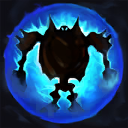
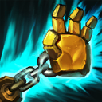
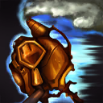

核心裝備
 騎士誓願
騎士誓願 錫柯的聚合之力
錫柯的聚合之力 蘇瑞亞的戰歌
蘇瑞亞的戰歌 黎明法衣
黎明法衣 好戰者鎧甲
好戰者鎧甲

以下為本站 7.2d 校正後的標準配置；實戰仍需依敵方陣容調整。


技能優先：Q > E > W

生命值降低至危險範圍時，布里茨會依自身魔力獲得護盾。被動進入冷卻前可承受一輪爆發，但不能把護盾當作固定坦度。

發射機械手，抓住第一個命中的敵人並拉到身前。士兵會阻擋技能，因此草叢、側面與牆角是主要出鉤角度。

短時間提高跑速與攻速，適合靠近目標或轉線遊走；效果結束後會短暫減速自己，進場前需預留退路。
強化下一次普攻，造成額外傷害並擊飛目標。近距離可先擊飛再抓取，或在拉回後接續控制。
被動使被攻擊的敵人延遲受到雷擊；主動對附近敵人造成魔法傷害、沉默並移除護盾，適合打斷反打與破解群體護盾。
1技抓取 → 普攻接觸目標 → 3技擊飛 → 4技沉默破盾 → 點燃壓低回復
拉回後先接擊飛，避免目標立即位移；大絕可在敵方準備護盾或反打時施放，不必固定瞬間全交。
2技加速靠近 → 3技先手擊飛 → 1技近距離抓取 → 4技沉默 → 普攻追擊
對手被逼到牆邊或沒有位移時，先擊飛再出鉤比遠距離盲抓穩定。注意二技結束後的自我減速。
閃現貼近核心 → 3技立即擊飛 → 1技把目標拉回 → 4技沉默破盾 → 點燃收尾
閃現擊飛沒有鉤子飛行時間，適合抓有位移的後排。確定隊友能跟上且自己不會被反包圍再使用。
一級火箭抓取的存在本身就能逼迫敵方走位，不必每次冷卻完成都出鉤。先佔草叢、繞開士兵或用走位把對手逼向牆邊，再抓關鍵目標；近距離時可先用充能一擊擊飛，再接火箭抓取提高命中率。過載運轉結束後會自我減速，追擊前先確認能否完成控制鏈。
推完下路或射手安全收線時，跟著打野遊走中路與物件區。海克斯閃現和草叢視野能改變出鉤角度；抓到前排不一定有價值，應優先等待脆皮、打野或主要輸出露出位置。靜電力場可主動沉默並移除護盾，面對群盾或關鍵保命盾時要保留施放時機。
不要為了找鉤站進無視野區，先和隊友排除草叢再施壓。團戰可抓走位失誤的後排，也可留鉤與擊飛保護己方主力。火箭抓取命中後立刻判斷拉來的是可秒殺目標、坦克還是反開角色；若拉錯人可能直接替對手完成開戰。
對局名單是本站依英雄機制與目前配置整理的參考，不等同固定勝率。
輔助調整以團隊承傷、解控與保護主力為優先，不為了單一敵人破壞整套功能裝。
觸發：敵方主要輸出集中在射手、物理刺客或普攻型英雄。
蘭頓之兆進一步降低暴擊傷害，適合第二層針對。
觸發：敵方主要威脅來自法師、AP刺客或大量範圍魔法傷害。
改走水星之靴→鎖鏈軍靴，補魔防、韌性與魔法護盾。
自然之力在連續承受魔法技能後能進一步降低魔法傷害。
觸發：敵方硬控能直接抓死己方主力，或你進場後會被連續控制。
改走水星之靴→鎖鏈軍靴，直接補韌性與魔防。
提醒：米凱主要替隊友解控；水星彎刀則是物理英雄自我解控，兩者角色不同。
觸發：敵方有大量治療、吸血或回復，讓己方集火很難完成擊殺。
荊棘之甲讓前排在承受普攻或主動造成傷害時施加重創，同時補物防。
觸發：己方只有一個主要輸出點，且敵方每波團戰都會集中切入他。
日輪的加冕提供即時群體護盾，補上騎士誓願以外的團隊保護。
提醒：保排調整看己方陣容，不是看到敵方刺客就把所有功能裝都換成防裝。
7.2a 輔助路第一批正式攻略：技能名稱與核心機制依 Riot Games 台灣《激鬥峽谷》布里茨英雄頁校正，版本基準採官方 7.2a 更新公告；出裝、符文、召喚師技能、技能順序與對局方向依本站輔助資料整合。Tier 維持本站既有輔助路評級。｜v70：套用瑟雷西 v69 輔助固定母版。
本站於 2026-08-27 依 Patch 7.2d 重新檢查此配置。 Tier、出裝、符文與對局屬於 Wild Rift Guide 的整理與分析，不是 Riot Games 官方推薦；版本改動後會再依官方公告與實戰資料校正。